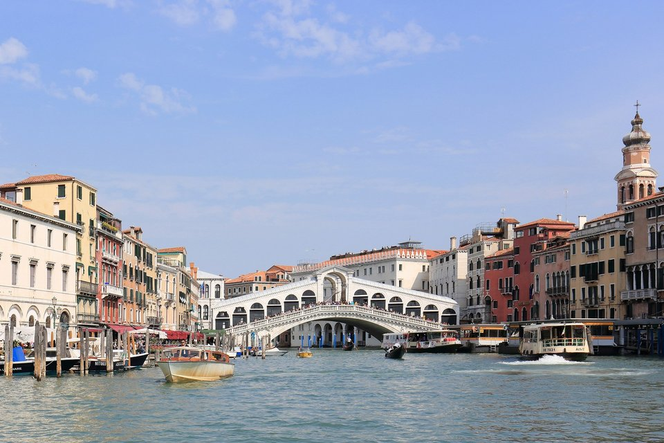

Italy · Venice
Grand Canal audio guide
16 stops · 11 min
Billed in ZAR
Unlocks in this browser after payment.
Sixteen GPS-triggered stops turn a public vaporetto ride down the Grand Canal into a narrated architectural cruise. From Santa Lucia railway station to St Mark's Basin, stories point out merchant warehouses, Gothic palaces, and bridges as you pass.
Stops
- 1
The main street of Venice
Board near Ferrovia station as the S-shaped canal opens ahead, serving for centuries as Venice's busiest commercial avenue.
Free sample: stop 1
Play0:00 / –:–– - 2
The bridge of the barefoot friars
Glide beneath the stone arch of the Ponte degli Scalzi, named for the Barefoot Carmelite church on the north bank.
Script and audio included when you buy - 3
The Turks' warehouse
Spot the long arcaded Fondaco dei Turchi on the right, once the regulated trading warehouse for Ottoman merchants.
Script and audio included when you buy - 4
Ca' Vendramin Calergi
Pass Ca' Vendramin Calergi on the left, the crisp Renaissance palace where composer Richard Wagner died in 1883.
Script and audio included when you buy - 5
Ca' Pesaro
Look right at Baldassare Longhena's bold Baroque Ca' Pesaro, anchored by diamond-cut Istrian stone blocks.
Script and audio included when you buy - 6
The House of Gold
Admire the delicate Gothic tracery of the Ca' d'Oro on the left bank, whose façade was once richly gilded and painted.
Script and audio included when you buy - 7
The Rialto market
Pass the bustling Rialto food and fish markets along the right bank just upstream of the bridge.
Script and audio included when you buy - 8
The Germans' warehouse
See the massive square Fondaco dei Tedeschi on the left, historic trading post for German merchants and later painted by Giorgione and Titian.
Script and audio included when you buy - 9
The Rialto Bridge
Sail under the single stone span of the Rialto Bridge, engineered in the late sixteenth century to let galley masts pass below.
Script and audio included when you buy - 10
The Doge's palace on the bend
Round the wide canal bend past Ca' Foscari, built in 1453 as the Gothic palace of Doge Francesco Foscari.
Script and audio included when you buy - 11
Ca' Rezzonico
Look right at Ca' Rezzonico, an eighteenth-century Baroque showcase begun by Longhena and completed for a newly noble banking family.
Script and audio included when you buy - 12
Palazzo Grassi
Pass neoclassical Palazzo Grassi on the left bank, contrasting calmly with its ornate Gothic neighbours.
Script and audio included when you buy - 13
The Accademia Bridge
Slip under the timber arch of the Accademia Bridge linking Dorsoduro with San Marco.
Script and audio included when you buy - 14
Peggy Guggenheim's palace
Spot the unusually low single-storey Palazzo Venier dei Leoni on the right, long home to art collector Peggy Guggenheim.
Script and audio included when you buy - 15
The plague church
Round the broad octagonal domes of Santa Maria della Salute, built as a vow after the devastating 1630 plague.
Script and audio included when you buy - 16
The customs point
Finish at the triangular Punta della Dogana customs point where merchant cargoes were inspected as St Mark's opens ahead.
Script and audio included when you buy
On the map
All 16 stop pins for this guide are marked. Open map